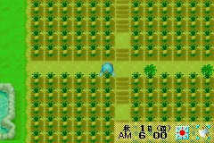

在牧场物语男孩版(女孩版没试过，不知道行不行)里夏季最后一天不睡觉，秋一日5:50-6:00时会强迫睡觉，
而我们只需增加疲劳度至马上就晕倒的程度，这样在换天时就会晕倒进医院
等醒来时(秋二日)，就会惊奇的发现农场里的作物会变得很奇怪
(如图3)但对那个位置点一下，发现手里多了个菠萝，其实现在夏季的作物就可以继续生长了，
小矮人可以浇水和收获，现在就变成了可以每5天收一次菠萝了。
而此BUG不会影响原有秋季规律，如地瓜可以直接种植，后山还是可以拿到秋季特产。
这样的话两季就可以净赚392W，比原来的231W多了160多W.而且秋季也会相对轻松很多。
把牧场分为4大块，每块为21×12格。（这样分配应该是对这个牧场的最大利用了）。
两季菠萝收8次：21×12×4×8×500-112×1000= 3,920,000(G)
而不用BUG最大利润：
菠萝：21×12×4×2×500-112×1000= 896000(G)
地瓜：21×12×4×12×120-112×300= 1417920(G)，相加才231W。
其实秋季换冬季也可以用此BUG的，但地里看起来很不舒服，所以不是很推荐在冬天继续种，
当然小矮人还是可以在这样的土地浇水收获的。
除非你想买别墅（用此BUG一年最多可1200W，几年就可以买到别墅），
要不就不要在秋换冬用这BUG.继续用下去的话春季植物会变隐形的，呵呵。
用了BUG后过时的作物就显示不正常了，目前还没有解决办法。
如果不想要的话就直接割掉就可以了，种上当季作物和平时一样的（不割也不会影响其他作物）。
我用这个BUG主要是在秋季有菠萝收，赚钱比地瓜多，而且五天收一回，相对地瓜来说轻松很多。
还有，只有秋-冬换季用了BUG就算把作物割掉地面还是会不正常的。
PS：有些玩家比较喜欢种牧草放牧。
其实秋季把牧草种下去的话冬季还是可以继续生长的，只须在正确位置挥动镰刀就可以收获。
不过还是不建议冬天割草——因为冬天也可以放牧！只是看不到牧草而已。
上面说得话不需要用这个BUG，但是到了春天那里就变成了刚种上种子的样子，这BUG就又有用处了。
冬换春时用了它你会发现牧草已经长好了(当然需要你再冬天最后10天没有收割这些牧草)。
那样你就可以很快的圈地放牧了，不用每天把牛羊赶出来再赶进去。
注意：因在1号早上晕倒，所以要在2号才能起床，动植物需提前拜托小矮人浇水，收获，喂食。
镇长注：经黑暗BASS等会员验证，英文版和女孩版同样适用此bug。
另外强调关键词：6点、自动
因为6点被瞬移回家男孩版会加4点疲劳，女孩版加10点，就要在这几点疲劳里面自动晕倒，所以你过了4点让主角脸色发青再用几下就差不多了